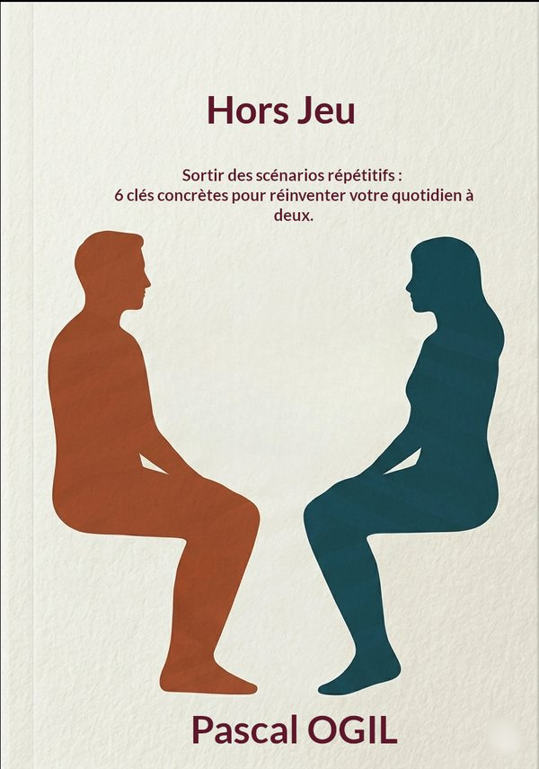
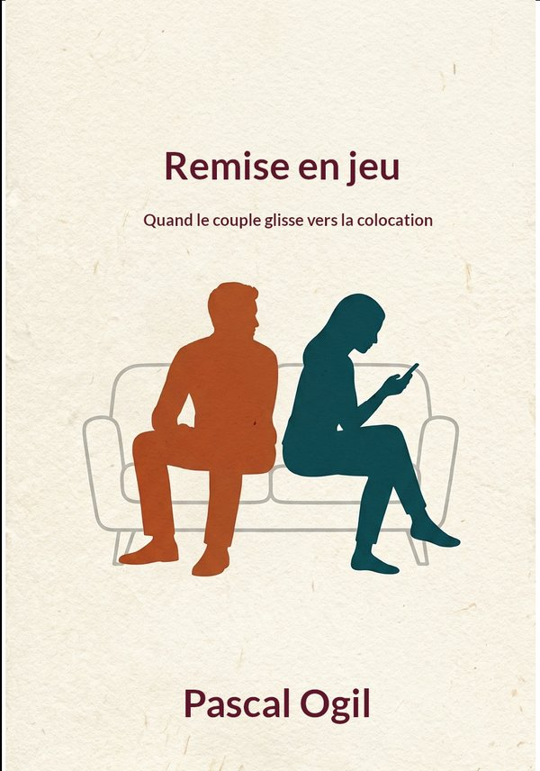
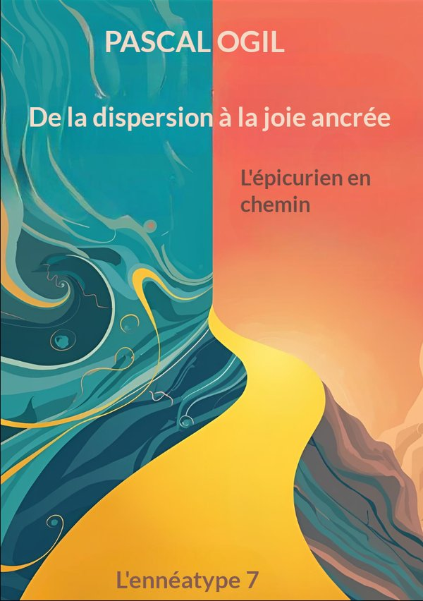
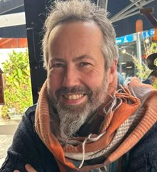

Hors Jeu / Out of the Game
Six scènes ordinaires, six jeux qui transforment une simple discussion en conflit répétitif, et des portes pour en sortir.
Couple · relation · développement
Comprendre ce qui se joue entre vous, en commençant par ta propre place, pour choisir ce que vous voulez vivre. Sans chercher de coupable, et sans recette.
« C'est quel programme ? »
« Laisse, je vais le faire. »
« De toute façon, c'est toujours moi qui fais tout. »
La démarche
La plupart des tensions dans un couple ne viennent pas d'un manque d'amour. Elles viennent de scénarios qui se répètent, que personne n'a choisis et que chacun entretient. Je propose une paire de lunettes pour les voir.
Dans une dispute qui revient, il n'y a pas un coupable et une victime. Il y a deux personnes qui tiennent chacune un rôle, et qui y gagnent toutes les deux quelque chose.
On ne change pas l'autre. On peut changer sa propre place dans la scène, et initier ainsi le mouvement pour son couple. À un moment, le jeu se joue à deux.
Derrière chaque scène, il y a des modèles solides. Ils restent en arrière-plan : ce qui compte, c'est que tu te reconnaisses et que tu comprennes.
Les chemins
Un couple n'avance pas par étapes. Il vit plusieurs chantiers à la fois. Chacun peut commencer par celui qui le concerne aujourd'hui.
Pour qui
Tu vis en couple depuis des années. Il n'y a pas de drame, mais il y a des disputes qui reviennent, des rôles qui se sont figés, ou cette impression de vivre à côté de l'autre plutôt qu'avec lui.
Tu as peut-être lu, fait une thérapie, un coaching. Tu comprends beaucoup de choses. Et tu te retrouves quand même dans les mêmes scènes. C'est souvent seul qu'on commence à chercher, et c'est très bien ainsi.
Les ruptures en cours et les situations de violence demandent un autre cadre. Dans ces cas, je t'oriente vers un thérapeute de couple ou un médiateur.
Mes outils
Les livres

Six scènes ordinaires, six jeux qui transforment une simple discussion en conflit répétitif, et des portes pour en sortir.

Quand le couple glisse vers la colocation : les jeux qui ne se voient pas, chez les couples qui ne se disputent plus.
Un guide court pour repérer son rôle préféré dans les jeux du couple, et le signal qui dit qu'on y est entré.

L'épicurien en chemin : le type 7 de l'ennéagramme, raconté de l'intérieur.
Les vidéos
Des vidéos courtes : une scène du quotidien, une notion, une part de mon histoire. Chaque fois, ce qui se joue derrière, et une question à emporter.
Bientôt
Un court questionnaire pour repérer le jeu qui revient le plus souvent chez vous, et savoir par où commencer.
Qui suis-je

Pendant des années, c'est moi qui expliquais à ma compagne comment faire les choses. Quand elle a commencé à s'affirmer, mon confort d'avoir raison s'est effondré. Ce rééquilibrage nous a allégés tous les deux, et il est au cœur de ce que je transmets.
Je suis coach depuis de nombreuses années, auprès de personnes, d'équipes et d'organisations. J'ai vu partout les mêmes mécanismes : des rôles qu'on n'a pas choisis, des jeux qui se répètent, des besoins qu'on n'ose pas dire. Le couple est l'endroit où ils pèsent le plus, et où ils peuvent le plus changer.
Coach professionnel certifié (RNCP niveau 6) · Technicien en ennéagramme · Love coach certifié · Auteur de trois livres
Accompagnement
Les accompagnements individuels ouvriront prochainement. En attendant, tu peux m'écrire.
Contact thyshimrod [at] gmail [point] com